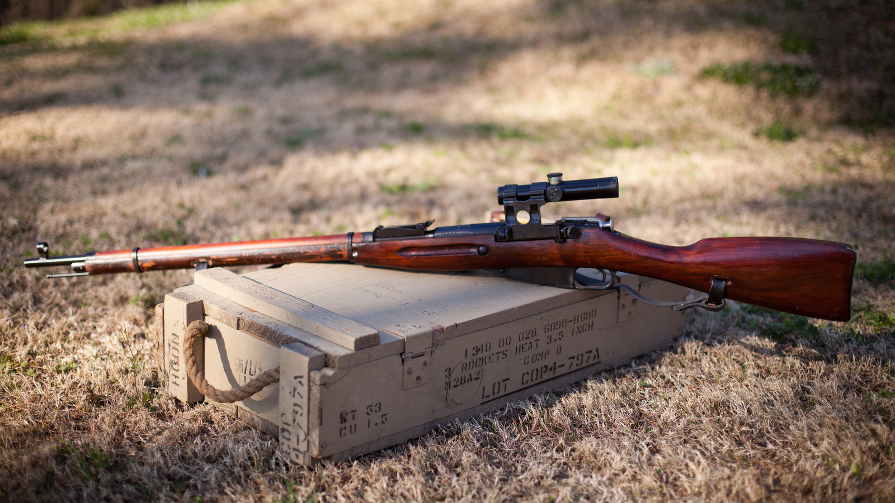

Пехотное оружие
Винтовка Мосина «Трёхлинейка»

- Генеральный конструктор: С. И. Мосин
- Год принятия на вооружение: 1891
- Тип: массовая, магазинная
- Калибр: 7,62 мм
- Ёмкость магазина: 5 патронов
- Применение: Подавление восстания боксёров в Китае, и т.д.
7,62-мм винтовка Мосина образца 1891 года была принята на вооружение Русской Императорской Армии в 1891 году. Является одним из самых массовых образцов оружия первой половины XX века и символом Великой Отечественной войны. Название винтовки «трёхлинейка» происходит от старой английской меры длины «линия», которая равнялась 1/10 дюйма, а три линии это 2,54 мм * 3 = 7,62 мм, то есть калибр винтовочного патрона.[129] Винтовка Мосина работает по принципу скользящего затвора (ручное перезаряжание). Питание осуществляется из неотъёмного магазина на пять патронов, который снаряжается обоймами. Калибр патрона 7,62×54 мм, прицельная дальность поражения 2000 метров. Прицел открытый, имеются снайперские варианты винтовки, которые массово выпускались с 1936 года. Они отличались возможностью установки оптического прицела и повышенной кучностью стрельбы.[130][131] Зарядка патронов сверху несколько снижала ассортимент оптических прицелов, снайпер заряжал патроны по одному, но это с лихвой компенсировалось на редкость точным боем.
Ручная граната образца 1912 года(РГ-12)

- Генеральный конструктор: В. И. Рдултовский
- Год принятия на вооружение: 1912
- Масса: 1230 г
- Применение: Первая мировая война
- Тип: дистанционная наступательная (4 секунды)
Пистолет-пулемёт Шпагина (ППШ)
- Генеральный конструктор: Г. С. Шпагин
- Год принятия на вооружение: 1940
- Калибр: 7,62 мм
- Ёмкость магазина: 35 патронов — рожковый, 71 — дисковый
- Применение: Вторая мировая война, война в Корее, война во Вьетнаме
Автомат Калашникова
- Генеральный конструктор: М. Т. Калашников
- Год принятия на вооружение: с 1949
- Калибр: 7,62/5,45 мм (основные калибры)
- Ёмкость магазина: 30 патронов — у самого популярного, и есть масса вариаций с магазинами от 5 до 100 патронов
- Применение: все военные конфликты второй половины XX века и начала XXI
Ручной противотанковый гранатомёт(РПГ-7)
- Генеральный конструктор: В. К. Фирулин
- Разработчик: ГСКБ-47
- Год принятия на вооружение: 1961
- Тип: противотанковый
- Калибр: 40 мм
- Применение: военные конфликты со второй половины XX века
СВЛК-14С «Сумрак»
- Разработчик: ООО «Конструкторское бюро интегрированных систем» (Корпорация «LOBAEV»)
- Тип: снайперская сверхдальнобойная, однозарядная
- Год принятия на вооружение: 2012
- Калибр: .408 Cheytac\.338LM\.300WM\.338 Lobaev Whisper
Пистолет Макарова (ПМ)

- Генеральный конструктор: Н. Ф. Макаров
- Год принятия на вооружение: 1951
- Калибр: 9 мм
- Ёмкость магазина: 8 патронов (12 патронов у ПММ)
- Применение: военные конфликты со второй половины ХХ века, основное оружие МВД до 2021